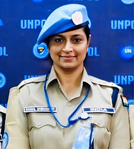
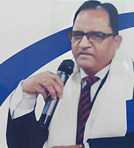
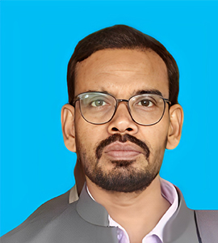

Advisory Board
Our Advisory Board brings together experienced professionals dedicated to guiding our mission of empowering senior citizens with dignity, care, and compassion.

Ms. Kamal Shekhawat
Addl. SP. Rajasthan Police
Seasoned police officer with vast experience in law enforcement, public safety and community engagement.

Dr. Prabhat Kumar Tewari
MD, Medicine
Experienced medical professional dedicated to elder healthcare and well-being.
Dr. Aradhana Yadav
Research Assistant, Atlantic Technological University
Research professional focused on innovation, academic excellence and impactful social development.
Dr. Abhilasha Singh
Associate Professor
Passionate academician committed to quality education, research and capacity building initiatives.
Dr. Lala Ram Jat
Associate Professor
Experienced educator promoting knowledge, innovation and community-centered learning.

Dheeraj Verma, IPS
Rajasthan Police
Senior police officer working towards public safety, justice and citizen empowerment.

Mr. Darmendar Kumar
Consultant Child Protection
Dedicated development professional working in child protection, inclusion and social welfare initiatives.